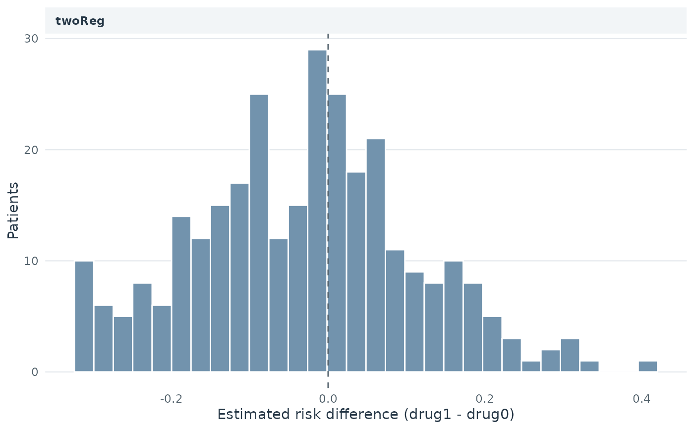

Display the distribution of scores fitted by catefit(). These are
in-sample predictions; their spread alone does not establish treatment-effect
heterogeneity or validate the score.
Arguments
- x
An object of class
"catefit".- methods
Optional character vector of fitted scoring methods to show, in the desired order. The default shows all available scores.
- type
Either
"histogram"(default) or"density". Density curves require at least two distinct finite values per method.- bins
Positive integer number of histogram bins; default 30.
- null.value
Position of a dashed reference line on the score scale; default 0. Use
NULLorNAto omit the line.- theme
A ggplot2 theme, defaulting to the package plot theme.
- ...
Currently unused.
Details
Binary scores are risk differences, count scores are log rate ratios,
survival scores are log restricted mean time lost ratios, and continuous
scores are mean differences. The treatment contrast is treatment 1 versus
treatment 0 (or treatment 1 minus treatment 0 for differences). The
methods may impose different model assumptions; see catefit().
Original treatment labels are shown when stored in the fit; older objects
without labels use treatment 1 and treatment 0.
Histogram panels show patient counts for each method. Density curves are
normalized separately and overlaid for comparison.
Author
Thomas Debray tdebray@fromdatatowisdom.com
Examples
# \donttest{
d <- simulate_binary(n = 300, seed = 1)
fit <- catefit("binary", d, y ~ age, "logistic", "two_regression", trt ~ age,
prop.cutoff = 1, B = 1, Kfold = 2, seed = 1, higher.y = FALSE)
plot(fit)

# }